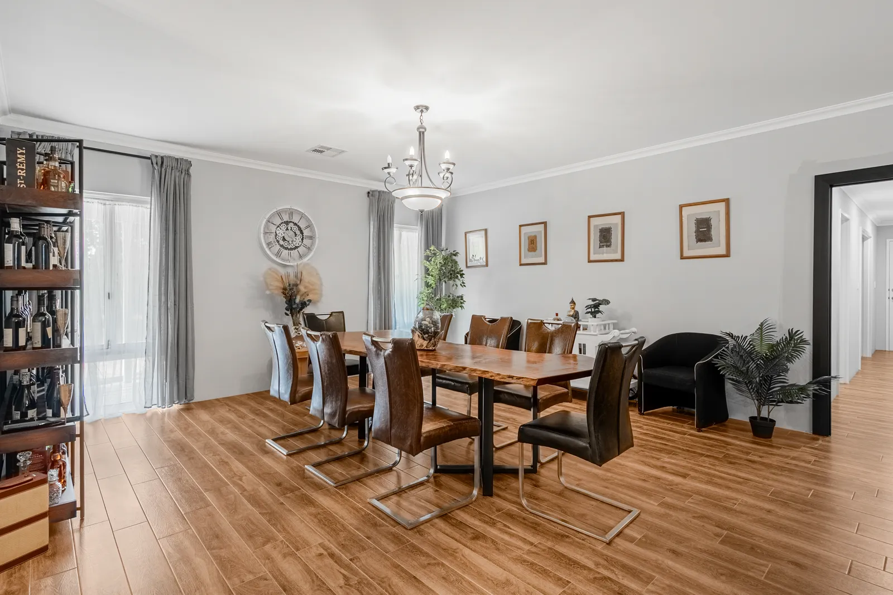

Guide for Perth agents and sellers
What Real Estate Photography Costs in Perth
The six things that move the price of a listing shoot, when a package beats single services, what should already be included, and who pays in WA.
With Baker Production, real estate photography in Perth costs $159 for a rental shoot (up to 25 images) and $189 for a sales shoot (unlimited images, 60 minutes on site). Packages that add a floor plan, drone, video or twilight run from $329 to $1,329. Six things move the price: the type of shoot, what you add to it, the size of the home, the time on site, any editing beyond the standard edit, and where and when the shoot happens. Prices include GST and metro travel; the exact figures live on the pricing page.
The six things that set the price
1. The type of shoot. A sales listing and a rental listing are different jobs. A sales shoot gets more time and more angles: at Baker, $189 for unlimited images and 60 minutes on site. A rental shoot only needs to show the rooms clearly and get the property leased, so it is shorter and capped: $159 for up to 25 images in 30 minutes. If only the front of the house is needed — a sign-board photo or a quick re-list — a call-out is $100 for up to five images.
2. What you add. Most of the spread between a $189 shoot and a $1,329 campaign is extra formats, not better photos. Drone is $189, a floor plan starts at $159 and includes a 360° interior tour, a full 3D virtual tour is $159, a listing video is $450 (or $650 day-to-night), a social media walkthrough is $87 and a twilight add-on is $75. Add the ones the listing needs, not all of them. The drone page and floor plans page explain when each earns its place.
3. The size of the home. Photography itself is a flat price, but anything that is measured is priced by internal living area. Floor plans and packages step up in bands, because a bigger home takes longer to measure and draw.
| Internal living area | Floor plan | Added to a package |
|---|---|---|
| Up to 140 m² | $159 | Included |
| 140–270 m² | $199 | +$40 |
| 270–370 m² | $219 | +$60 |
| 370–470 m² | $299 | +$100 |
| Over 470 m² | $299 + $1/m² | +$100 + $1/m² |
The area is measured on site, so if a home turns out to sit in a different band from the one booked, the price is adjusted once the plan is finished. Homes over 1,200 m² are quoted individually.
4. Time on site. Time is the real cost of a shoot, and it scales with what is being captured: 30 minutes for a rental, 60 for sales photography, 90 for the Essential, Premium and Social Media Lite packages, 120 for Signature (which adds a listing video) and 150 for Elite Listing.
5. Editing beyond the standard edit. Colour, exposure, vertical correction and sky replacement on a grey day are part of every Baker shoot. What costs extra is changing what is in the frame: virtual staging is $25 per image, decluttering or object removal $5 per image and a day-to-dusk conversion $5 per image. Every enhanced image is marked as virtually enhanced — more on that below.
6. Where and when. Travel within 50 km of the Perth CBD is included, which covers Alkimos to Rockingham and the coast to the Hills (see areas we cover). Mandurah, Peel and regional WA are quoted. Timing matters too: twilight work happens in a short window after sunset, and the best daytime slot depends on which way the house faces — the Perth sun planner shows when.
Single services or a package?
If a listing needs more than one format, a package is usually cheaper than booking the pieces separately, and it means one visit and one invoice. Two worked examples from the current Baker prices, both inc. GST:
- A 3x2 home under 140 m² needing photos, a floor plan and drone. Booked separately: $189 + $159 + $189 = $537. The Premium package covers the same three (with the 360° interior tour) for $415.
- The same brief on a 200 m² family home. Separately: $189 + $199 + $189 = $577. Premium with the 140–270 m² size band: $415 + $40 = $455.
Where a package doesn’t pay: a rental, a fronts-only re-list, or a sale where the block and street add nothing and the agent already has a plan. Then a single service is the honest answer. What each package includes is on the pricing page.

What should already be in the price
When comparing quotes from any Perth real estate photographer, check whether these are included or added later:
- GST. Every Baker price includes it. A quote “plus GST” is 10% more than it looks.
- Travel. Included across the metro area here; some operators charge per kilometre.
- Image count. Unlimited on a Baker sales shoot, 25 on a rental. A low cap can mean paying again for the shots you wanted.
- Editing and sky replacement. Included here.
- Turnaround. Photography, drone and floor plans next day; video two days. Ask whether faster delivery costs more.
- Cancellation terms. Baker charges $110 only for cancellations within one hour of the appointment.
The full pre-booking checklist is on our Perth real estate photographer page.
Who pays for listing photos in WA
In Western Australia the seller normally pays for marketing, and it sits outside the agent’s commission. Consumer Protection WA’s guidance on selling through an agent makes three points worth knowing before you sign:
- Marketing is on top of commission. Photography, floor plans, portal listings and signboards are usually billed as marketing and advertising costs.
- It is payable even if the home doesn’t sell. Marketing you have authorised must be paid whether or not the property sells, unless you negotiate a “no sale, no fee” arrangement in the written authority.
- It must be in writing. All expenses are negotiable and must be recorded in the written authority. Ask the agent for a written schedule of advertising costs and a written marketing plan.
Cheaper editing isn’t worth a misleading photo
AI tools have made staging and object removal cheap, and that is fine when the photos still show the home as it is. On 19 November 2026 WA’s Commissioner for Consumer Protection said removing a cloudy sky or brightening an image is acceptable and that virtual staging can help buyers picture a room — but exaggerating features, changing room sizes or hiding defects such as water damage or cracks could be misleading under the Australian Consumer Law, and may also clash with the agents’ Code of Conduct. The Commissioner suggests a disclaimer when staging or significant enhancement is used.
That is why every enhanced Baker image is marked as virtually enhanced. Our virtual staging disclosure guide covers the rules in detail, including why editing should never hide defects or change fixtures, and the virtual staging page shows what is offered.
Real estate photography cost — common questions
Related
More reading: all our guides for Perth agents and sellers.
Sources
- Baker Production — full price list (all Baker figures on this page; checked 26 November 2026)
- Consumer Protection WA — Selling through an agent
- Consumer Protection WA — From the Commissioner: House hunting in the age of AI (19 November 2026)
General information only, current as at 26 November 2026 — not legal or financial advice. The booking system is always authoritative on price.
Know the price before you book.
Sales photography from $189, packages from $329, GST and metro travel included.